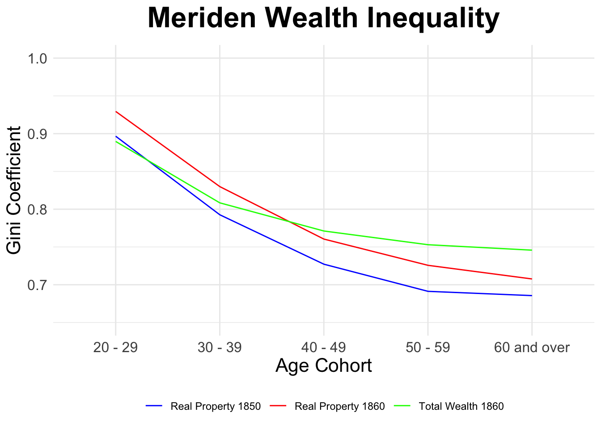

Wealth inequality, as measured by the Gini coefficient, decreases by age cohort in Meriden, in both 1850 and 1860. The graphs show the Gini coefficient for real property wealth in 1850 and 1860, and for total wealth in 1860, by age cohort.
The Gini coefficient is a measure of inequality, where 0 represents perfect equality and 1 represents perfect inequality.

The GINI coefficient for 1860 total wealth is correlated to total wealth as well as to age. Because wealth tends to increase with age, it’s important to determine which factor better describes the variation in GINI coefficients
Analysis demonstrates that age structure is a substantially better predictor of wealth inequality (GINI) than wealth itself. While wealth and age are positively correlated, age alone explains the majority of variation in inequality, with wealth contributing only marginal unique explanatory power.
The following ANOVA shows how much variation in GINI each factor explains sequentially (controlling for previous variables):
| Variable | Df | Sum Sq | Mean Sq | F value | Pr(>F) | Prop_Var_Explained | Cumulative_Prop | Significance | |
|---|---|---|---|---|---|---|---|---|---|
| pct_farm_1860 | pct_farm_1860 | 1 | 0.617 | 0.617 | 133.070 | 0.000 | 41.0% | 41.0% | *** |
| age_1860 | age_1860 | 1 | 0.138 | 0.138 | 29.722 | 0.000 | 9.2% | 50.1% | *** |
| wealth | wealth | 1 | 0.023 | 0.023 | 4.900 | 0.028 | 1.5% | 51.6% |
|
| Residuals | Residuals | 157 | 0.728 | 0.005 | NA | NA | 48.4% | 100.0% |
Key finding: Urbanization accounts for 41.0% of variation, age accounts for 9.2%, while wealth adds only 1.5% beyond these factors.
Wealth and age are positively correlated:
## Pearson correlation (age × wealth): 0.109Wealth tends to increase with age, suggesting potential confounding.
To isolate whether wealth explains inequality beyond what age already captures, we compare three models:
| Model | R_squared | Adj_R_squared | AIC |
|---|---|---|---|
| Age only | 0.4254 | 0.4218 | -378.5419 |
| Wealth only | 0.0085 | 0.0023 | -290.7186 |
| Age + Wealth | 0.4524 | 0.4455 | -384.3116 |
Observation: Age alone (R² = 0.425) explains substantially more variation than wealth alone (R² = 0.009).
The critical test: Does including wealth improve a model that already includes age?
| Model | Res_DF | RSS | DF_Change | SS_Change | F_Value | P_Value |
|---|---|---|---|---|---|---|
| Age only | 159 | 0.8651 | NA | NA | NA | NA |
| Age + Wealth | 158 | 0.8243 | 1 | 0.0408 | 7.8119 | 0.0058 |
##
##
## **Additional R² contributed by wealth:** 2.7%Age structure is a strong predictor of wealth inequality, explaining approximately 42.5% of variation (with urbanization)
Wealth adds minimal unique explanatory power - only 2.7% beyond what age already explains
The age-wealth correlation (r = 0.109) suggests that wealth’s apparent effect is largely mediated by age
Substantive interpretation: Demographic composition matters for inequality in ways that go beyond simple wealth accumulation. Policies targeting age structure or life-cycle effects may be more relevant to inequality than direct wealth redistribution.